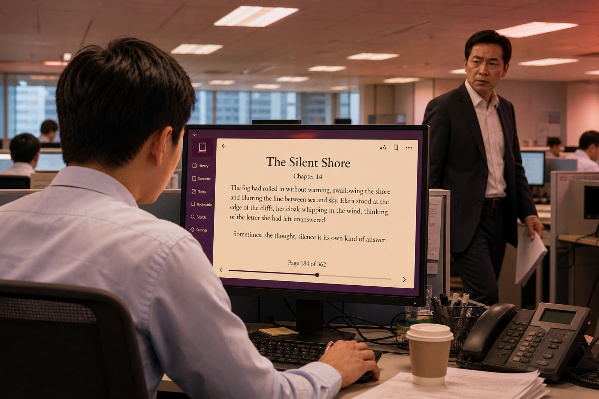

一般閱讀方式
容易露出破綻
- 電子書應用的圖示與排版，遠看即可辨識
- 在瀏覽器再套一層閱讀介面，會出現雙重網址列
- 上司走近才切換視窗，往往已經太遲
- 安裝擴充功能或應用程式，會留下權限與安裝紀錄
辦公室隱蔽閱讀器 · 免安裝
專為上班族設計的偽裝式網頁閱讀器。句子顯示於 Chrome 網址列，畫面可呈現工作截圖；可以獨立彈出視窗開啟。Panic Button 一鍵將書本句子換成預設或自訂的偽裝網址，背景維持工作截圖。閱讀器僅供電腦瀏覽器使用。
上司接近時
空白鍵即可換成偽裝網址
網址列的書本句子會改為預設或自訂文字，背景維持工作截圖。
Read at Ease
一般電子書應用、瀏覽器分頁或額外套層，都容易露出閱讀痕跡。Readbar 以偽裝網址列、工作截圖背景、獨立彈出視窗與 Panic Button，讓閱讀融入日常操作。

一般閱讀方式
Readbar
Features
註冊後即可使用全部八項功能，無需升級或付款。
可匯入 EPUB 電子書，亦支援 TXT。適合在辦公室以句子為單位閱讀。
一鍵將簡體中文轉為繁體，無需另外尋找轉換工具。
上傳 PNG、JPG 或 WEBP 工作截圖，讓畫面下方呈現日常工作內容，最多 20 張並可隨時切換。
由會員中心以獨立彈出視窗開啟閱讀器，減少分頁列干擾，無須安裝。
上司走近時，一鍵將網址列的書本句子換成偽裝文字，背景維持工作截圖。
閱讀進度保存在此瀏覽器。書本內容不會上傳到我們的伺服器。
可自行設定上一句、下一句、Panic Button 等按鍵，設定會保存在此瀏覽器。
預先設定網址列在 Panic 模式下顯示的假網址或文字，看起來更像日常瀏覽。
閱讀內容顯示於偽裝網址列，畫面其餘部分可放置工作截圖。搭配 Panic Button，上司走近時只需一鍵，網址列的書本句子即改為預設或自訂的偽裝網址，背景維持工作截圖。
免安裝。由會員中心以獨立彈出視窗開啟閱讀器，減少分頁列。閱讀內容顯示於我們繪製的偽裝工具列，畫面可放置工作截圖。
不需要。Readbar 為純網頁應用，使用公司電腦的瀏覽器即可，避免安裝紀錄及額外權限審查。
不需要。註冊帳號後即可使用全部功能，包括 EPUB、簡轉繁、20 張背景、獨立彈出視窗、Panic Button 與自訂快捷鍵。
不可以。閱讀器專為辦公室電腦瀏覽器而設，流動裝置會顯示提示並無法開啟。請以電腦瀏覽器登入後再啟動。
書本內容不會上傳到我們的伺服器。閱讀進度保存在你的瀏覽器。